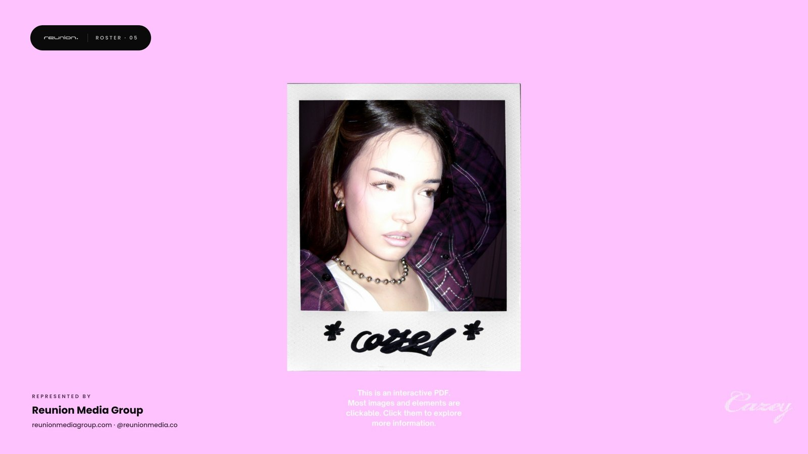
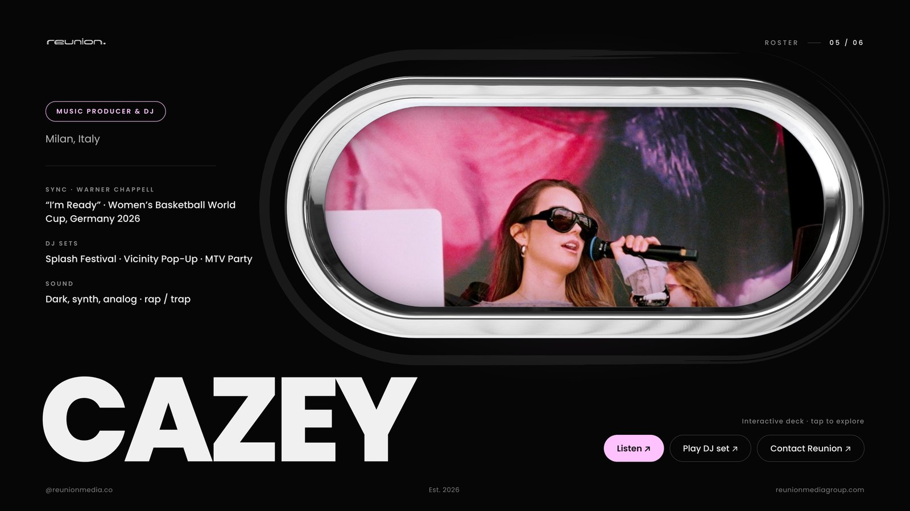
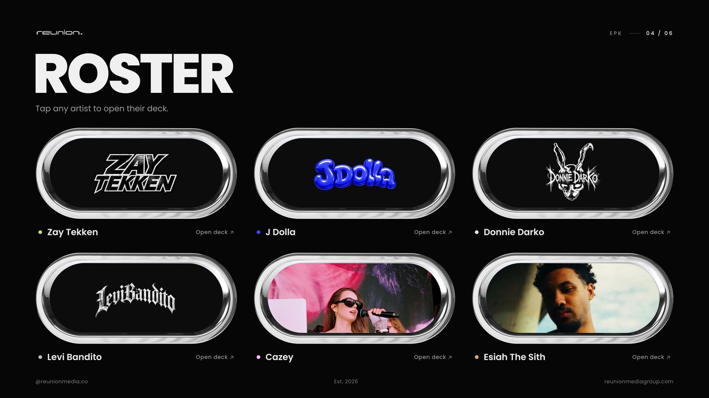
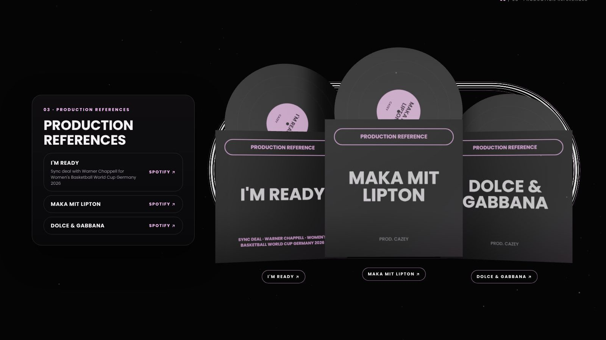
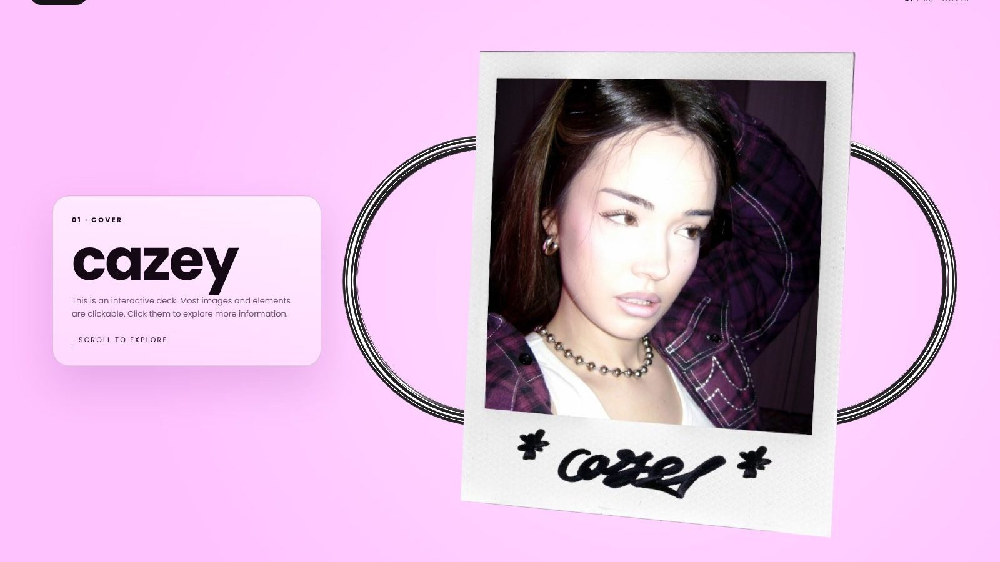

AInteractive PDFSame deck, Reunion signature
Cazey's current deck and look, with the Reunion signature and your management contact on every deck.
Open PDF ↗Style samples
Four free samples built with the content of Cazey's deck, to show what we can do for the Reunion roster. Pick the direction you like, or tell me if you'd prefer a different style.

AInteractive PDFCazey's current deck and look, with the Reunion signature and your management contact on every deck.
Open PDF ↗
BInteractive PDF
A full redesign in one Reunion template, so the whole roster looks like one team. Includes a roster page where each artist opens their own deck.
Open PDF ↗
C3D websiteCazey's full deck as a 3D scroll website. You travel through the chrome Reunion pill, chapter by chapter: bio, releases, DJ sets, live set and contact.
Open 3D web →
D3D websiteThe same 3D website in Cazey's own pink look, with the black Reunion signature, like sample A.
Open 3D web →A + B in one interactive PDF (3 pages, clickable links): Cazey in option A, Cazey in option B and the Reunion roster page.
Open PDF ↗C and D work on phone and laptop: just scroll. Most elements are clickable (Spotify, sets, Instagram, contact).
All content comes from Cazey's deck. They are style samples, not final designs: the final version is built around what you choose.